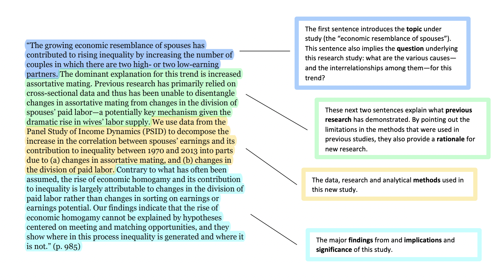
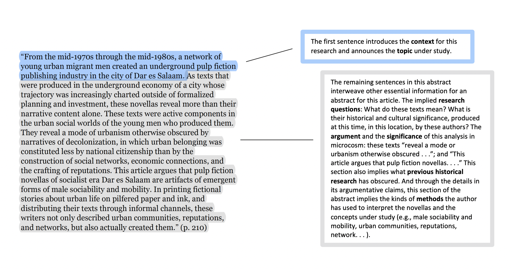

Definition and Purpose of Abstracts
After writing a scientific article, you need to make a very short summary paragraph as we call it “abstract”. Abstract is an outline or brief summary of your scientific paper or project. It is the last thing to write, but it is put in the beginning of your paper so that the reader know your paper easily. Usually it is written no more than 200-300 words in ONE paragraph.
It’s also worth remembering that search engines and bibliographic databases use abstracts, as well as the title, to identify key terms for indexing your published paper. So what you include in your abstract and in your title are crucial for helping other researchers find your paper or article.
If you are writing an abstract for a course paper, your professor may give you specific guidelines for what to include and how to organize your abstract. Similarly, academic journals often have specific requirements for abstracts. So in addition to following the advice on this page, you should be sure to look for and follow any guidelines from the course or journal you’re writing for.
The Contents of an Abstract
Abstracts contain most of the following kinds of information in brief form. The body of your paper will, of course, develop and explain these ideas much more fully. As you will see in the samples below, the proportion of your abstract that you devote to each kind of information—and the sequence of that information—will vary, depending on the nature and genre of the paper that you are summarizing in your abstract. And in some cases, some of this information is implied, rather than stated explicitly.
Here are the typical kinds of information found in most abstracts:
- The context or background information for your research; the general topic under study; the specific topic of your research
- The central questions or statement of the problem your research addresses
- What’s already known about this question, what previous research has done or shown
- The main reason(s), the exigency, the rationale, the goals for your research—Why is it important to address these questions? Are you, for example, examining a new topic? Why is that topic worth examining? Are you filling a gap in previous research? Applying new methods to take a fresh look at existing ideas or data? Resolving a dispute within the literature in your field?
- Your research and/or analytical methods.
- Your main findings, results, or arguments.
- The significance or implications of your findings or arguments.
Choosing Verb Tenses within Your Abstract
The Social Science Sample (Sample 1) below uses the present tense to describe general facts and interpretations that have been and are currently true, including the prevailing explanation for the social phenomenon under study. That abstract also uses the present tense to describe the methods, the findings, the arguments, and the implications of the findings from their new research study. The authors use the past tense to describe previous research.
" Gonalons-Pons, Pilar, and Christine R. Schwartz. “Trends in Economic Homogamy: Changes in Assortative Mating or the Division of Labor in Marriage?” Demography, vol. 54, no. 3, 2017, pp. 985-1005."
{kind=link}
The Humanities Sample (Sample 2) below uses the past tense to describe completed events in the past (the texts created in the pulp fiction industry in the 1970s and 80s) and uses the present tense to describe what is happening in those texts, to explain the significance or meaning of those texts, and to describe the arguments presented in the article.
" Emily Callaci. “Street Textuality: Socialism, Masculinity, and Urban Belonging in Tanzania’s Pulp Fiction Publishing Industry, 1975-1985.” Comparative Studies in Society and History, vol. 59, no. 1, 2017, pp. 183-210."
{kind=link}
The Science Samples (Samples 3 and 4) below use the past tense to describe what previous research studies have done and the research the authors have conducted, the methods they have followed, and what they have found. In their rationale or justification for their research (what remains to be done), they use the present tense. They also use the present tense to introduce their study (in Sample 3, “Here we report . . .”) and to explain the significance of their study (In Sample 3, This reprogramming . . . “provides a scalable cell source for. . .”).
" Lalit, Pratik A., Max R. Salick, Daryl O. Nelson, Jayne M. Squirrell, Christina M. Shafer, Neel G. Patel, Imaan Saeed, Eric G. Schmuck, Yogananda S. Markandeya, Rachel Wong, Martin R. Lea, Kevin W. Eliceiri, Timothy A. Hacker, Wendy C. Crone, Michael Kyba, Daniel J. Garry, Ron Stewart, James A. Thomson, Karen M. Downs, Gary E. Lyons, and Timothy J. Kamp. “Lineage Reprogramming of Fibroblasts into Proliferative Induced Cardiac Progenitor Cells by Defined Factors.” Cell Stem Cell, vol. 18, 2016, pp. 354-367."
Design text by Richard Pardede · Images by The Writing Center